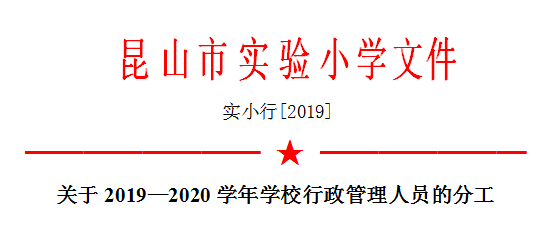

鞍山市铁东区胜利小学欢迎您！
首页 > 详情信息

荣建强：集团总校长，实小执行校长，党总支书记。负责集团及实小党总支、行政全面工作。
俞培菊：副校长，西校区执行校长，兼集团学生发展、课程建设中心主任。主管西校区日常工作，分管教科、综合考评工作。
浦培生：副校长，东校区执行校长。主管东校区日常工作。分管创建、招生、体卫艺、安全维稳、信访处理等工作。
黄红梅：副校长，兼集团教学、教师发展中心主任。分管教学、教师队伍建设、支教、特色建设、绩效考核等工作。
荣建英：工会主席，西校区党支部书记。主持工会、西校区党支部全面工作。
陶沁：党政办主任。主持党政办全面工作。协助做好学校日常行政管理、对外宣传、新媒体、校园文化建设、内外协调、办公室管理工作，负责公文处理、会议记录、每周工作安排。
吴丽萍：校长助理兼集团党政办主任。分管德育工作。协助负责集团和实小党建工作和集团日常工作协调落实。
黄文清：人事处主任。主持人事处全面工作。做好档案室、校史馆管理和教师职称评聘、绩效考核等工作。
姜敏：教导处主任，兼集团教学、教师发展中心副主任。主持教导处全面工作。协助做好学校教学工作。负责校本教研、六认真管理、语文学科教学、语言文字、学科竞赛、书法等级考试等工作。
孙希：教科室主任，兼集团教学、教师发展中心副主任。主持教科室全面工作。负责教科研、新教育实验（联合德育处）等工作。
周贤鑫：校长助理、课程建设中心主任，兼集团学生发展、课程建设中心副主任。。协助做好课程建设、社团及丰富校园生活活动，负责数学学科教学。
朱琴秀：教师发展中心主任。主持教师发展中心全面工作。负责青蓝工程、教师培训、教师队伍建设、支教等工作。
王洪：体卫艺处主任。负责体卫艺和综合学科教学、专业队训练工作及课务安排、学籍管理。
赵斌：教技室主任。主持教技室全面工作。负责专用教室（馆）管理工作。
孙军:总务主任、少科院院长，兼集团后勤保障、服务中心副主任。主持总务处、少科院全面工作。负责西校区的后勤、安保工作。
何琪：安保处主任、总务处副主任。主持安保处全面工作，协助做好东校区后勤管理、资产管理、食堂管理等工作。
许春霞：德育处主任，负责班主任队伍建设、师德师风建设、常规管理、德育宣传等工作。
陆亚勤：西校区教导处主任。协助做好教学工作。负责西校区学科教学管理、六认真管理、校本教研等工作。协管数学学科。
王焱：西校区德育处主任、校长办公室主任。协助做好学校德育工作和西校区行政事务工作。负责西校区的德育，包括班主任队伍建设、师德师风建设、常规管理、德育宣传等。
王溢涓：德育处副主任。协助做好德育工作。负责常规管理、红十字、关心下一代、家长志愿者、故事妈妈、家长学校、心理健康教育等工作。
侯霞萍：少科院副院长。协助做好少科院、学校特色建设工作。
冯庆华：安保处副主任、教导处副主任。协助做好安保、教学管理工作，具体负责西校区安保、教务工作。
杭艳：德育处副主任，西校区少先队大队总辅导员。协助做好德育工作。负责少先队、班级文化建设、主题教育月活动、少年军校等工作。
周琳：教科室副主任。配合做好教科研工作。负责西校区党务工作。
吴进：人事处副主任。配合做好人事管理工作。
陶晓婷：教技室副主任。配合做好教技室工作，主要负责西校区。
孙凌琳：教导处主任助理。协助做好教导处工作，负责英语学科、特殊教育等工作。协助做好党总支党务工作。
徐娟：教导处主任助理。协助做好教学管理工作，主要负责综合学科。
詹萍：教导处主任助理。协助做好教导处工作，协管语文学科等。
王丛碧：教导处主任助理。协助做好教导处工作，主管英语学科等。
王梦怡：德育处主任助理。负责少先队、班级文化建设、主题教育月活动、少年军校（警校）、红领巾电视台（广播）等工作。